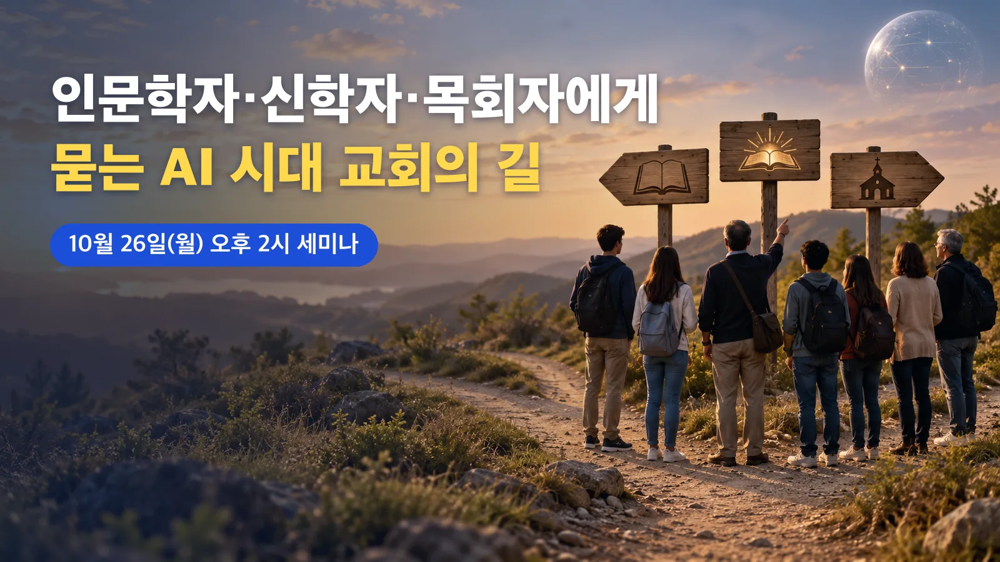

이지 자료실 · AI 교회사역
인문학자·신학자·목회자에게 묻는 AI 시대 교회의 길, 10월 26일 세미나
작성 · 글 이지연 · NCCK 보도자료(10.21)와 웹자보 기준
- 한국기독교교회협의회(NCCK) 에큐메니칼신학과교육위원회가 2026년 10월 26일(월) 오후 2시부터 5시까지 서울 한국기독교회관 2층 조에홀에서 에큐메니칼 세미나 「A.I의 시대, 길을 묻다」를 엽니다.
- 이도흠 한양대학교 교수가 「인문학자에게 묻는다」, 김은하 실천신학대학원대학교 교수가 「신학자에게 묻는다」, 한문덕 향린교회 목사가 「목회자에게 묻는다」를 주제로 차례로 발표합니다.
- NCCK는 기술을 보는 관점, 사회적 기준, 인간 존엄성과 공동선을 함께 이야기하는 공론장을 열겠다고 밝혔습니다. 참가 신청 방법과 온라인 중계 여부는 보도자료와 웹자보에 나와 있지 않습니다.

| 무엇을 | 2026 NCCK 에큐메니칼 세미나 「A.I의 시대, 길을 묻다」, 발표 3개 |
|---|---|
| 누가 | NCCK 에큐메니칼신학과교육위원회 주관 · 발표 이도흠(한양대학교), 김은하(실천신학대학원대학교), 한문덕(향린교회) |
| 언제 | 2026년 10월 26일(월) 오후 2시~5시 |
| 어디서 | 한국기독교회관 2층 조에홀 (서울 종로구 대학로 19) |
| 신청·중계 | 보도자료·웹자보에 안내 없음. 문의 02-743-4471(에큐메니칼신학과교육위원회) |
| 발표 | NCCK 보도자료(교회협 언론 2026-62호), 2026년 10월 21일 |
1. 세 사람에게 차례로 길을 묻는 세미나
한국기독교교회협의회(NCCK)는 1924년부터 한국의 여러 교회가 일치와 협력을 위해 함께해 온 기관입니다. 이번 세미나는 NCCK 안의 에큐메니칼신학과교육위원회가 준비했습니다. 오후 2시부터 5시까지 세 시간 동안 인문학자, 신학자, 목회자가 한 사람씩 발표합니다.
행사 이름은 보도자료에 「A.I의 시대, 길을 묻다」로, 웹자보에는 「A.I 시대, 길을 묻다」로 적혀 있습니다. 언론 보도에서는 「AI의 시대, 길을 묻다」로 쓰기도 합니다.
2. NCCK가 밝힌 개최 이유
NCCK는 보도자료에서 ChatGPT를 시작으로 생성형 AI 기술과 소프트웨어가 빠르게 개발되고 상용화되면서, AI가 기술 발전을 넘어 사회 구조 전체를 바꾸는 큰 전환을 가져오고 있다고 진단했습니다. 동시에 AI가 사람과 자연생태계에 심각한 위협이 될 수 있다는 반성의 목소리도 커지고 있다고 적었습니다. 그래서 기술을 보는 관점과 사회적 기준, 인간 존엄성과 공동선을 이야기할 공론장을 마련했다고 밝혔습니다.
3. 인문학·신학·목회, 세 개의 발표
발표 순서는 인문학, 신학, 목회입니다. 이도흠 한양대학교 교수가 「인문학자에게 묻는다」로 첫 발표를 맡고, 김은하 실천신학대학원대학교 교수가 「신학자에게 묻는다」, 한문덕 향린교회 목사가 「목회자에게 묻는다」로 뒤를 잇습니다. 뉴시스는 이 구성을 인문학·신학·목회 현장의 세 시각에서 AI 시대를 진단하는 발제라고 소개했습니다.
10월 23일 현재 공개된 보도자료와 기사에는 각 발표의 요지가 나와 있지 않습니다. NCCK 관계자는 뉴시스에 이 자리가 "교회가 나아가야 할 길"을 깊이 찾는 자리가 될 것이라고 말했습니다.
첫 발표자인 이도흠 교수는 한양대학교 국어국문학과 교수로, 2020년 12월 『4차 산업혁명과 대안의 사회』(특별한서재, 2권)를 펴냈습니다. 연합뉴스는 이 책이 인공지능을 둘러싼 쟁점을 살피고 "선한 인공지능" 제작을 대안으로 내놓는다고 소개했습니다. 이번 발표가 이 책을 다루는지는 알려지지 않았습니다.
4. 일시·장소와 참석 문의
세미나는 10월 26일 월요일 오후 2시부터 5시까지, 서울 종로구 대학로 19 한국기독교회관 2층 조에홀에서 열립니다. 문의는 NCCK 에큐메니칼신학과교육위원회(02-743-4471)가 받습니다.
보도자료와 웹자보에는 사전 신청, 참가비, 온라인 중계에 관한 안내가 없습니다. 같은 NCCK의 미디어홍보위원회가 낸 11월 5일 포럼 안내에는 사전 신청과 유튜브 중계가 따로 적혀 있습니다.
5. 같은 시기 열리는 교계의 AI 논의
연합뉴스는 2026년 5월 기사에서 AI가 종교계 전반의 중요한 화두가 되었고, AI 챗봇에 고민을 털어놓고 위안을 얻는 사람도 늘고 있다고 전했습니다. 같은 기사는 한국기독교학술원이 5월 21일 「신학적으로 본 AI, 기회인가? 위협인가?」 세미나를 열었고, NCCK 에큐메니칼신학과교육위원회가 하반기에 AI 관련 개별 논의를 묶어 낼 학술 행사를 준비하고 있다고 소개했습니다.
11월 초에도 모임이 이어집니다. 11월 5일(목) 오후 7시에는 한국 그리스도교 신앙과 직제협의회가 향린교회에서 「2026 한국 그리스도인 일치포럼」을 열고, 교황 레오 14세가 2026년 5월 15일 자로 낸 회칙 「마니피카 후마니타스(고귀한 인류)」를 살펴봅니다. 이 회칙은 AI 시대에 인간을 지키는 일을 다룹니다. 같은 날 오후 2시에는 NCCK 미디어홍보위원회와 한국기독교언론포럼이 연동교회에서 유튜브 알고리즘과 신앙 공동체를 다루는 포럼 「알고리즘은 우리를 어디로 데려가는가」를 엽니다.
참고 자료
- 한국기독교교회협의회 보도자료 「「에큐메니칼 세미나 : "A.I의 시대, 길을 묻다"」 취재 및 보도요청의 건」 (2026.10.21, 교회협 언론 2026-62호, 웹자보 포함)
- 뉴시스 「'AI 시대, 길을 묻다'…NCCK, 에큐메니칼 세미나」 (2026.10.22)
- 컵뉴스 「NCCK, 'AI 시대, 교회와 사회의 길을 묻다' 에큐메니칼 세미나 개최」 (2026.10.22)
- 연합뉴스 「AI에 위안 얻는 시대…인간과 AI 바람직한 공존 모색하는 종교계」 (2026.05.25)
- 한국기독교교회협의회 「일치 포럼 안내」 (2026 한국 그리스도인 일치포럼) (2026.10.15)
- 한국기독교교회협의회 미디어홍보위원회 연속포럼 「알고리즘은 우리를 어디로 데려가는가」 참여 안내 (2026.10.19)
- Leo XIV, Encyclical Letter 「Magnifica Humanitas」 on safeguarding the human person in the time of artificial intelligence, 교황청 누리집 (2026.05.15)
- 연합뉴스 「미래사회 인간과 AI의 관계는…"선한 인공지능 제작해야"」 (2020.12.23)
이 글은 2026년 10월 21일 NCCK 보도자료와 웹자보, 10월 22일 뉴시스·컵뉴스 보도, 관련 공식 안내와 연합뉴스 기사를 2026년 10월 23일에 확인해 정리했습니다.
함께 읽을 글